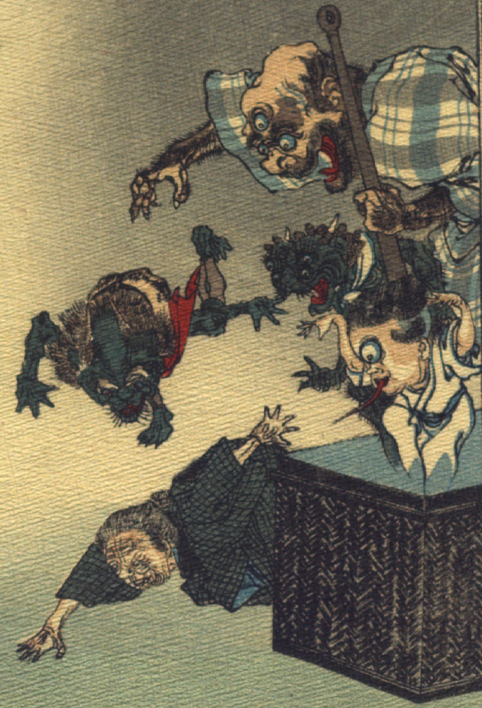

葛籠から飛び出した化け物たち。一つ目小僧、三つ目の大男、鬼のような化け物が、老婆に襲いかかろうとしている。老婆は床を這うようにして逃げようとしている。
出典：親書誌：U426_nichibunken_0109：Le moineau qui a la langue coupée／日付：2006／資源識別子：U426_nichibunken_0109_0008_0000
Copyright (c)2010- International Research Center for Japanese Studies, Kyoto, Japan. All rights reserved.